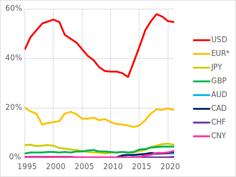
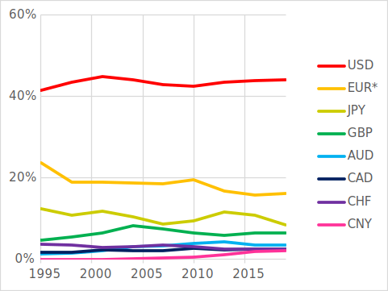
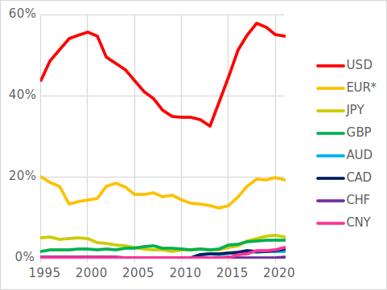
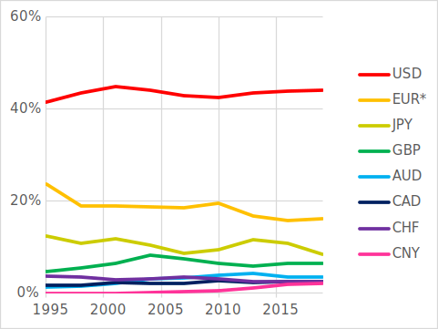
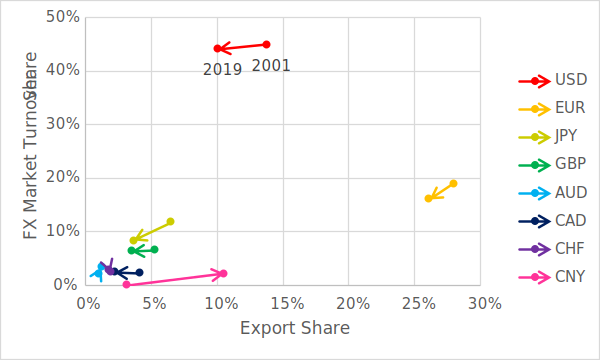

|  | Share in FX reserve (Source: IMF) |
|  | Share in global payments (Source: IMF Paper, World Bank, SWIFT and others) |
 |
FX market turnover (Source: BIS) |
| EUR* includes pre-euro currencies before 2000 |
Money is used as a store of value, a medium for exchange, and a unit of account. A currency’s performance in the above can be assessed by looking at its share in Foreign Exchange (FX) reserve, global payments (say from SWIFT and exports invoicing data), and FX market turnover.
The 8 largest currencies are
Hegemon: USD
Strong contender: EUR
Dark horses: JPY, GBP
Specialty players: AUD, CAD, CHF, CNY
|  | Share in FX reserve (Source: IMF) |
|  | Share in global payments (Source: IMF Paper, World Bank, SWIFT and others) |
|
FX market turnover (Source: BIS) |
| EUR* includes pre-euro currencies before 2000 |
Country's economic strength and network effects combine to shape a currency’s popularity.
|  | FX market turnover share vs. Export share (Source: BIS, WB) |
Gold and crypto are two noteworthy alternatives to sovereign currencies. Gold has long been a reserve asset while crypto has yet to become a serious option.
Both are widely traded in the market, but are rarely used for global payments. The landscape may change for crypto when it gains acceptance with time.
Created: 202204